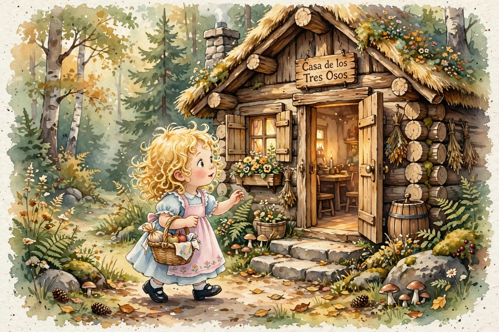
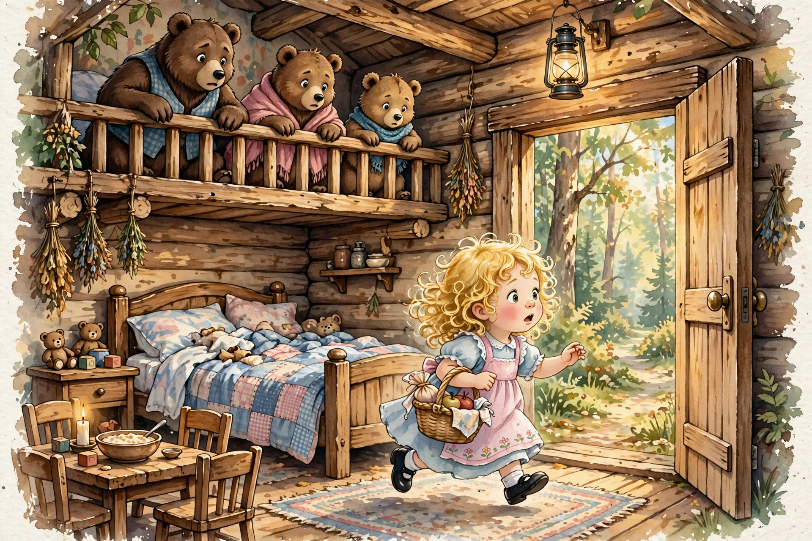

Érase una vez una familia de osos que vivían en una linda casita en el bosque. Papá Oso era muy grande, Mamá Osa era de tamaño mediano y Osito era pequeño. Una mañana, Mamá Osa sirvió la más deliciosa avena para el desayuno, pero como estaba demasiado caliente para comer, los tres osos decidieron ir de paseo por el bosque mientras se enfriaba. Al cabo de unos minutos, una niña llamada Ricitos de Oro llegó a la casa de los osos y tocó la puerta. Al no encontrar respuesta, abrió la puerta y entró en la casa sin permiso. En la cocina había una mesa con tres tazas de avena: una grande, una mediana y una pequeña. Ricitos de Oro tenía un gran apetito y la avena se veía deliciosa. Primero, probó la avena de la taza grande, pero la avena estaba muy fría y no le gustó. Luego, probó la avena de la taza mediana, pero la avena estaba muy caliente y tampoco le gustó. Por último, probó la avena de la taza pequeña y esta vez la avena no estaba ni fría ni caliente, ¡estaba perfecta! La avena estaba tan deliciosa que se la comió toda sin dejar ni un poquito. Después de comer el desayuno de los osos, Ricitos de Oro fue a la sala. En la sala había tres sillas: una grande, una mediana y una pequeña. Primero, se sentó en la silla grande, pero la silla era muy alta y no le gustó. Luego, se sentó en la silla mediana, pero la silla era muy ancha y tampoco le gustó. Fue entonces que encontró la silla pequeña y se sentó en ella, pero la silla era frágil y se rompió bajo su peso. Buscando un lugar para descansar, Ricitos de Oro subió las escaleras, al final del pasillo había un cuarto con tres camas: una grande, una mediana y una pequeña. Primero, se subió a la cama grande, pero estaba demasiado dura y no le gustó. Después, se subió a la cama mediana, pero estaba demasiado blanda y tampoco le gustó. Entonces, se acostó en la cama pequeña, la cama no estaba ni demasiado dura ni demasiado blanda. De hecho, ¡se sentía perfecta! Ricitos de Oro se quedó profundamente dormida. Al poco tiempo, los tres osos regresaron del paseo por el bosque. Papá Oso notó inmediatamente que la puerta se encontraba abierta: —Alguien ha entrado a nuestra casa sin permiso, se sentó en mi silla y probó mi avena —dijo Papá Oso con una gran voz de enfado. —Alguien se ha sentado en mi silla y probó mi avena —dijo Mamá Osa con una voz medio enojada. Entonces, dijo Osito con su pequeña voz: —Alguien se comió toda mi avena y rompió mi silla. Los tres osos subieron la escalera. Al entrar en la habitación, Papá Oso dijo: —¡Alguien se ha acostado en mi cama! Y Mamá Osa exclamó: —¡Alguien se ha acostado en mi cama también! Y Osito dijo: —¡Alguien está durmiendo en mi cama! —y se puso a llorar desconsoladamente. El llanto de Osito despertó a Ricitos de Oro, que muy asustada saltó de la cama y corrió escaleras abajo hasta llegar al bosque para jamás regresar a la casa de los osos.

Versión de Paola Artmann
Volver al inicio